2. Getting started with prtecan#
[1]:
import os
import warnings
import arviz as az
import matplotlib.pyplot as plt
import numpy as np
import pandas as pd
import seaborn as sb
from clophfit import prtecan
from clophfit.binding import fitting, plotting
from clophfit.prtecan import Titration, TitrationAnalysis
%load_ext autoreload
%autoreload 2
os.chdir("../../tests/Tecan/140220/")
warnings.filterwarnings("ignore", category=UserWarning, module="clophfit.prtecan")
2.1. Parsing a Single Tecan File#
A Tecan file comprises of multiple label blocks, each with its unique metadata. This metadata provides critical details and context for the associated label block. In addition, the Tecan file itself also has its overarching metadata that describes its overall content.
When the KEYS for label blocks are identical, it indicates that these label blocks are equivalent - meaning, they contain the same measurements. The equality of KEYS plays a significant role in parsing and analyzing Tecan files, as it assists in identifying and grouping similar measurement sets together. This understanding of label block equivalence based on KEY similarity is critical when working with Tecan files.
[2]:
tf = prtecan.Tecanfile("../290212_6.38.xls")
lb0 = tf.labelblocks[0]
tf.metadata
[2]:
{'Device: infinite 200': Metadata(value='Serial number: 810002712', unit=['Serial number of connected stacker:']),
'Firmware: V_2.11_04/08_InfiniTe (Apr 4 2008/14.37.11)': Metadata(value='MAI, V_2.11_04/08_InfiniTe (Apr 4 2008/14.37.11)', unit=None),
'Date:': Metadata(value='29/02/2012', unit=None),
'Time:': Metadata(value='15.57.05', unit=None),
'System': Metadata(value='TECANROBOT', unit=None),
'User': Metadata(value='TECANROBOT\\Administrator', unit=None),
'Plate': Metadata(value='PE 96 Flat Bottom White [PE.pdfx]', unit=None),
'Plate-ID (Stacker)': Metadata(value='Plate-ID (Stacker)', unit=None),
'Shaking (Linear) Duration:': Metadata(value=50, unit=['s']),
'Shaking (Linear) Amplitude:': Metadata(value=2, unit=['mm'])}
[3]:
print("Metadata:\n", lb0.metadata, "\n")
print("Data:\n", lb0.data)
Metadata:
{'Label': Metadata(value='Label1', unit=None), 'Mode': Metadata(value='Fluorescence Top Reading', unit=None), 'Excitation Wavelength': Metadata(value=400, unit=['nm']), 'Emission Wavelength': Metadata(value=535, unit=['nm']), 'Excitation Bandwidth': Metadata(value=20, unit=['nm']), 'Emission Bandwidth': Metadata(value=25, unit=['nm']), 'Gain': Metadata(value=81, unit=['Manual']), 'Number of Flashes': Metadata(value=10, unit=None), 'Integration Time': Metadata(value=20, unit=['µs']), 'Lag Time': Metadata(value='µs', unit=None), 'Settle Time': Metadata(value='ms', unit=None), 'Start Time:': Metadata(value='29/02/2012 15.57.55', unit=None), 'Temperature': Metadata(value=26.0, unit=['°C']), 'End Time:': Metadata(value='29/02/2012 15.58.35', unit=None)}
Data:
{'A01': 30072.0, 'A02': 27276.0, 'A03': 22249.0, 'A04': 30916.0, 'A05': 27943.0, 'A06': 25130.0, 'A07': 26765.0, 'A08': 27836.0, 'A09': 23084.0, 'A10': 31370.0, 'A11': 16890.0, 'A12': 22136.0, 'B01': 22336.0, 'B02': 31327.0, 'B03': 24855.0, 'B04': 32426.0, 'B05': 30066.0, 'B06': 27018.0, 'B07': 28269.0, 'B08': 27570.0, 'B09': 31310.0, 'B10': 24358.0, 'B11': 22595.0, 'B12': 20355.0, 'C01': 23232.0, 'C02': 32241.0, 'C03': 28309.0, 'C04': 26642.0, 'C05': 28818.0, 'C06': 26638.0, 'C07': 26423.0, 'C08': 29441.0, 'C09': 28541.0, 'C10': 29656.0, 'C11': 29841.0, 'C12': 25738.0, 'D01': 26578.0, 'D02': 22280.0, 'D03': 36219.0, 'D04': 25735.0, 'D05': 35433.0, 'D06': 27376.0, 'D07': 22497.0, 'D08': 35681.0, 'D09': 26154.0, 'D10': 32311.0, 'D11': 27495.0, 'D12': 22459.0, 'E01': 27576.0, 'E02': 26058.0, 'E03': 28882.0, 'E04': 26188.0, 'E05': 27531.0, 'E06': 31269.0, 'E07': 26757.0, 'E08': 26427.0, 'E09': 27764.0, 'E10': 27184.0, 'E11': 26556.0, 'E12': 18494.0, 'F01': 22120.0, 'F02': 26642.0, 'F03': 25432.0, 'F04': 23801.0, 'F05': 23932.0, 'F06': 28471.0, 'F07': 27151.0, 'F08': 30243.0, 'F09': 29908.0, 'F10': 27429.0, 'F11': 23624.0, 'F12': 20150.0, 'G01': 18084.0, 'G02': 23496.0, 'G03': 25347.0, 'G04': 30926.0, 'G05': 32714.0, 'G06': 29026.0, 'G07': 33351.0, 'G08': 25353.0, 'G09': 29849.0, 'G10': 25687.0, 'G11': 20913.0, 'G12': 20991.0, 'H01': 25504.0, 'H02': 23601.0, 'H03': 24436.0, 'H04': 27613.0, 'H05': 28201.0, 'H06': 29740.0, 'H07': 26272.0, 'H08': 28696.0, 'H09': 29984.0, 'H10': 25136.0, 'H11': 22063.0, 'H12': 20888.0}
2.2. Group a list of tecan files into a titration#
The command Titration.fromlistfile(“../listfile”) reads a list of Tecan files, identifies unique measurements in each file, groups matching ones, and combines them into a titration set for further analysis.
[4]:
tit = Titration.fromlistfile("./list.pH", is_ph=True)
print(tit.conc, "\n")
lbg0 = tit.labelblocksgroups[0]
lbg1 = tit.labelblocksgroups[1]
lbg0.metadata, lbg1.metadata
[9.06 8.35 7.7 7.08 6.44 5.83 4.99]
[4]:
({'Label': Metadata(value='Label1', unit=None),
'Mode': Metadata(value='Fluorescence Top Reading', unit=None),
'Excitation Wavelength': Metadata(value=400, unit=['nm']),
'Emission Wavelength': Metadata(value=535, unit=['nm']),
'Excitation Bandwidth': Metadata(value=20, unit=['nm']),
'Emission Bandwidth': Metadata(value=25, unit=['nm']),
'Number of Flashes': Metadata(value=10, unit=None),
'Integration Time': Metadata(value=20, unit=['µs']),
'Lag Time': Metadata(value='µs', unit=None),
'Settle Time': Metadata(value='ms', unit=None),
'Gain': Metadata(value=93, unit=None)},
{'Label': Metadata(value='Label2', unit=None),
'Mode': Metadata(value='Fluorescence Top Reading', unit=None),
'Excitation Wavelength': Metadata(value=485, unit=['nm']),
'Emission Wavelength': Metadata(value=535, unit=['nm']),
'Excitation Bandwidth': Metadata(value=25, unit=['nm']),
'Emission Bandwidth': Metadata(value=25, unit=['nm']),
'Number of Flashes': Metadata(value=10, unit=None),
'Integration Time': Metadata(value=20, unit=['µs']),
'Lag Time': Metadata(value='µs', unit=None),
'Settle Time': Metadata(value='ms', unit=None),
'Movement': Metadata(value='Move Plate Out', unit=None),
'Gain': Metadata(value=56, unit=None)})
[5]:
lbg0.labelblocks[5].metadata["Temperature"]
[5]:
Metadata(value=25.3, unit=['°C'])
[6]:
lbg0.data["H12"], lbg1.data[
"H12"
], lbg0.data_buffersubtracted, lbg1.data_buffersubtracted
[6]:
([15112.0, 16345.0, 19169.0, 21719.0, 22128.0, 23532.0, 21909.0],
[5372.0, 4196.0, 2390.0, 1031.0, 543.0, 427.0, 371.0],
{},
{})
Start with platescheme loading to set buffer wells (and consequently buffer values).
Labelblocks group will be populated with data buffer subtracted with/out normalization.
[7]:
tit.load_scheme("./scheme.txt")
print(f"Buffer wells : {tit.scheme.buffer}")
print(f"Ctrl wells : {tit.scheme.ctrl}")
print(f"CTR name:wells {tit.scheme.names}")
Buffer wells : ['D01', 'E01', 'D12', 'E12']
Ctrl wells : ['F12', 'B01', 'C01', 'A12', 'C12', 'F01', 'A01', 'G12', 'H12', 'H01', 'G01', 'B12']
CTR name:wells {'G03': {'H12', 'B12', 'A01'}, 'NTT': {'F12', 'C12', 'F01'}, 'S202N': {'G12', 'H01', 'C01'}, 'V224Q': {'G01', 'B01', 'A12'}}
[8]:
lbg0.data["H12"], lbg1.data["H12"], lbg0.data_buffersubtracted[
"H12"
], lbg1.data_buffersubtracted["H12"], tit.data
[8]:
([15112.0, 16345.0, 19169.0, 21719.0, 22128.0, 23532.0, 21909.0],
[5372.0, 4196.0, 2390.0, 1031.0, 543.0, 427.0, 371.0],
[4226.5, 5005.25, 7829.75, 10291.75, 10238.75, 11381.25, 9566.0],
[5319.25, 4143.25, 2336.75, 977.0, 486.25, 367.75, 310.5],
[])
[9]:
tit.load_additions("./additions.pH")
tit.additions
[9]:
[100, 2, 2, 2, 2, 2, 2]
[10]:
lbg0.data["H12"], lbg1.data["H12"], lbg0.data_buffersubtracted[
"H12"
], lbg1.data_buffersubtracted["H12"], tit.data[0]["H12"], tit.data[1]["H12"]
[10]:
([15112.0, 16345.0, 19169.0, 21719.0, 22128.0, 23532.0, 21909.0],
[5372.0, 4196.0, 2390.0, 1031.0, 543.0, 427.0, 371.0],
[4226.5, 5005.25, 7829.75, 10291.75, 10238.75, 11381.25, 9566.0],
[5319.25, 4143.25, 2336.75, 977.0, 486.25, 367.75, 310.5],
[4226.5,
5105.3550000000005,
8142.9400000000005,
10909.255000000001,
11057.85,
12519.375000000002,
10713.920000000002],
[5319.25,
4226.115,
2430.2200000000003,
1035.6200000000001,
525.1500000000001,
404.52500000000003,
347.76000000000005])
The order in which you apply dilution correction and plate scheme can impact your intermediate results, even though the final results might be the same.
Dilution correction adjusts the measured data to account for any dilutions made during sample preparation. This typically involves multiplying the measured values by the dilution factor to estimate the true concentration of the sample.
A plate scheme describes the layout of the samples on a plate (common in laboratory experiments, such as those involving microtiter plates). The plate scheme may involve rearranging or grouping the data in some way based on the physical location of the samples on the plate.
[11]:
tit = Titration.fromlistfile("./list.pH", is_ph=True)
lbg0 = tit.labelblocksgroups[0]
lbg1 = tit.labelblocksgroups[1]
tit.load_additions("./additions.pH")
lbg0.data["H12"], lbg1.data[
"H12"
], lbg0.data_buffersubtracted, lbg1.data_buffersubtracted, tit.data
[11]:
([15112.0, 16345.0, 19169.0, 21719.0, 22128.0, 23532.0, 21909.0],
[5372.0, 4196.0, 2390.0, 1031.0, 543.0, 427.0, 371.0],
{},
{},
[None, None])
[12]:
tit.load_scheme("./scheme.txt")
lbg0.data["H12"], lbg1.data["H12"], lbg0.data_buffersubtracted[
"H12"
], lbg1.data_buffersubtracted["H12"], tit.data[0]["H12"], tit.data[1]["H12"]
[12]:
([15112.0, 16345.0, 19169.0, 21719.0, 22128.0, 23532.0, 21909.0],
[5372.0, 4196.0, 2390.0, 1031.0, 543.0, 427.0, 371.0],
[4226.5, 5005.25, 7829.75, 10291.75, 10238.75, 11381.25, 9566.0],
[5319.25, 4143.25, 2336.75, 977.0, 486.25, 367.75, 310.5],
[4226.5,
5105.3550000000005,
8142.9400000000005,
10909.255000000001,
11057.85,
12519.375000000002,
10713.920000000002],
[5319.25,
4226.115,
2430.2200000000003,
1035.6200000000001,
525.1500000000001,
404.52500000000003,
347.76000000000005])
2.2.1. Reassign Buffer Wells#
You can reassess buffer wells, updating the data to account for any dilution (additions) and subtracting the updated buffer value. This is a handy feature that gives you more control over your analysis.
For instance, consider the following data for a particular well:
[13]:
print(tit.labelblocksgroups[1].data["D01"])
print(tit.labelblocksgroups[1].data_buffersubtracted["D01"])
print(tit.data[1]["D01"])
[51.0, 52.0, 50.0, 51.0, 55.0, 58.0, 57.0]
[-1.75, -0.75, -3.25, -3.0, -1.75, -1.25, -3.5]
[-1.75, -0.765, -3.38, -3.18, -1.8900000000000001, -1.375, -3.9200000000000004]
You can reassign buffer wells using the buffer_wells attribute:
[14]:
tit.buffer_wells = ["D01", "E01"]
This updates the data for the specified wells, correcting for dilution and subtracting the buffer value:
[15]:
print(tit.labelblocksgroups[1].data["D01"])
print(tit.labelblocksgroups[1].data_buffersubtracted["D01"])
print(tit.data[1]["D01"])
[51.0, 52.0, 50.0, 51.0, 55.0, 58.0, 57.0]
[1.0, 2.0, -1.5, -0.5, 1.5, 3.0, 1.5]
[1.0, 2.04, -1.56, -0.53, 1.62, 3.3000000000000003, 1.6800000000000002]
The data remains: - unchanged in labelblocksgroups[].data - adjusted buffer subtracted in labelblocksgroups[].data_buffersubtracted - adjusted buffer subtracted and dilution corrected in data.
2.3. Titration Analysis#
[16]:
titan = TitrationAnalysis.fromlistfile("./list.pH", is_ph=True)
titan.load_scheme("./scheme.txt")
titan.load_additions("additions.pH")
# g = titan.plot_buffer()
titan.datafit_params = {"bg": True, "nrm": True, "dil": True}
[17]:
df1 = pd.read_csv("fit1.csv", index_col=0)
merged_df = titan.result_dfs[1][["K", "sK"]].merge(
df1, left_index=True, right_index=True
)
sb.jointplot(merged_df, x="K_y", y="K_x", kind="reg", ratio=3)
[17]:
<seaborn.axisgrid.JointGrid at 0x7f5285073050>
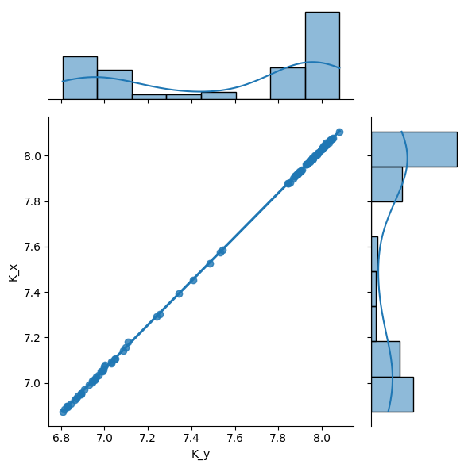
If a fit fails in a well, the well key will be anyway present in results list of dict.
[18]:
print(titan.data[0]["H02"])
print(titan.results[1].keys() - titan.results[0].keys())
titan.results[0]["H02"]
[34695.5, 49035.735, nan, nan, nan, nan, nan]
set()
[18]:
FitResult(figure=None, result=None, mini=None)
[19]:
titan.fitkws = TitrationAnalysis.FitKwargs(fin=-1, weight=False)
titan.results[2]["H02"].figure
[19]:
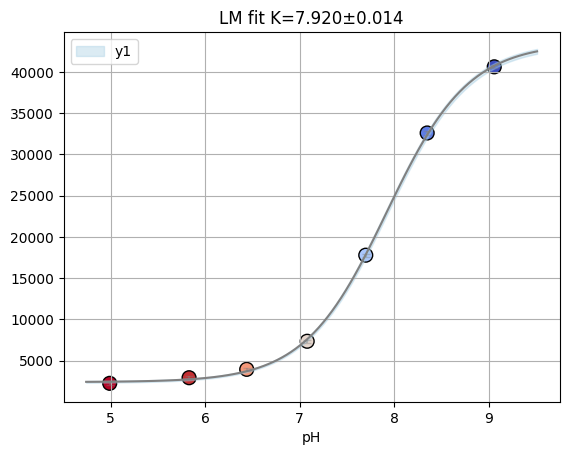
And in the gloabl fit (i.e. fitting 2 labelblocks) dataset with insufficient data points are removed.
[20]:
well = "H02"
y0 = np.array(titan.data[0][well])
y1 = np.array(titan.labelblocksgroups[1].data_buffersubtracted[well])
y1 = np.array(titan.data[1][well])
x = np.array(titan.conc)
ds = fitting.Dataset(x, {"y0": y0, "y1": y1}, is_ph=True)
rfit = fitting.fit_binding_glob(ds)
rfit.result.params
/tmp/ipykernel_64936/338912189.py:7: UserWarning: Marking dataset y0 for removal due to insufficient data points.
rfit = fitting.fit_binding_glob(ds)
[20]:
| name | value | standard error | relative error | initial value | min | max | vary |
|---|---|---|---|---|---|---|---|
| S0_y1 | 43342.7539 | 375.500142 | (0.87%) | 40564.25 | 0.00000000 | inf | True |
| S1_y1 | 2579.23144 | 185.957402 | (7.21%) | 2451.1200000000003 | -inf | inf | True |
| K | 7.89042258 | 0.01696391 | (0.21%) | 7.7 | 3.00000000 | 11.0000000 | True |
[21]:
titan.result_dfs[1].head()
[21]:
| S0_default | sS0_default | S1_default | sS1_default | K | sK | ctrl | |
|---|---|---|---|---|---|---|---|
| well | |||||||
| C02 | 2492.499767 | 28.618974 | 336.342151 | 28.305553 | 7.086751 | 0.034254 | NaN |
| D06 | 3336.695733 | 32.976839 | 122.953459 | 24.269400 | 7.453487 | 0.022836 | NaN |
| A05 | 7132.222048 | 105.367333 | 927.698177 | 115.880014 | 6.953428 | 0.046289 | NaN |
| E03 | 2737.063083 | 16.342103 | 191.420276 | 7.510533 | 7.961705 | 0.011430 | NaN |
| E08 | 3938.428099 | 63.615614 | 208.153910 | 25.983936 | 8.067620 | 0.028782 | NaN |
You can decide how to pre-process data with datafit_params: - [bg] subtract background - [dil] apply correction for dilution (when e.g. during a titration you add titrant without protein) - [nrm] normalize for gain, number of flashes and integration time.
[22]:
titan.datafit_params = {"bg": 1, "nrm": 0, "dil": 0}
titan.fitdata[1]["E06"]
[22]:
[9268.0, 7091.0, 3372.0, 1415.0, 793.0, 618.0, 345.0]
2.3.1. Posterior analysis with emcee#
To explore the posterior of parameters you can use the Minimizer object returned in FitResult.
[23]:
np.random.seed(0)
remcee = rfit.mini.emcee(burn=50, steps=500, workers=8, thin=10)
100%|███████████████████████████████████████████████████████████████████████████████████████████████████████████████████████████████████████████████████████| 500/500 [00:04<00:00, 123.66it/s]
The chain is shorter than 50 times the integrated autocorrelation time for 3 parameter(s). Use this estimate with caution and run a longer chain!
N/50 = 10;
tau: [41.79101671 25.77808566 39.55477457]
[24]:
f = plotting.plot_emcee(remcee.flatchain)
print(remcee.flatchain.quantile([0.03, 0.97])["K"].to_list())
[7.86, 7.91]
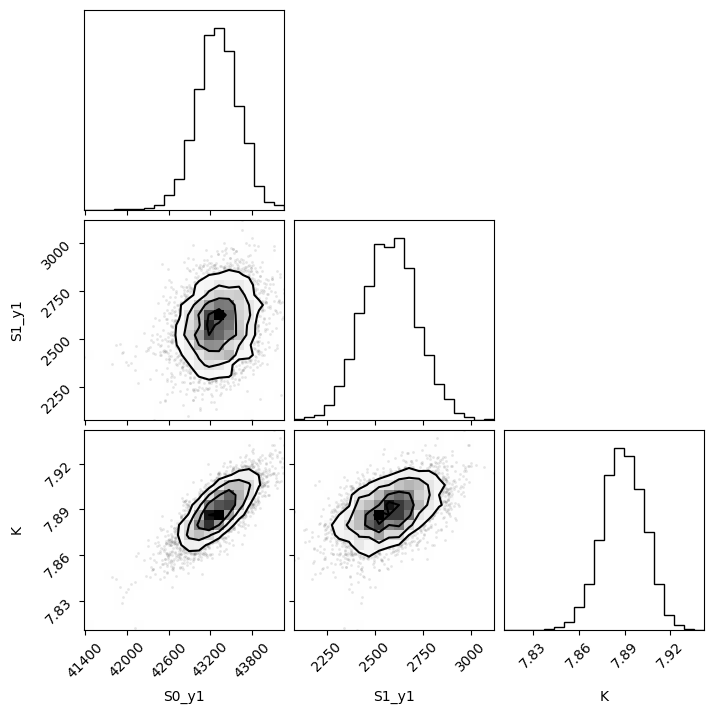
[25]:
# titan.plot_all_wells("cl.pdf")
[26]:
samples = remcee.flatchain[["K"]]
# Convert the dictionary of flatchains to an ArviZ InferenceData object
samples_dict = {key: np.array(val) for key, val in samples.items()}
idata = az.from_dict(posterior=samples_dict)
k_samples = idata.posterior["K"].values
percentile_value = np.percentile(k_samples, 3)
print(f"Value at which the probability of being higher is 99%: {percentile_value}")
az.plot_forest(k_samples)
Value at which the probability of being higher is 99%: 7.861435378874649
[26]:
array([<Axes: title={'center': '94.0% HDI'}>], dtype=object)
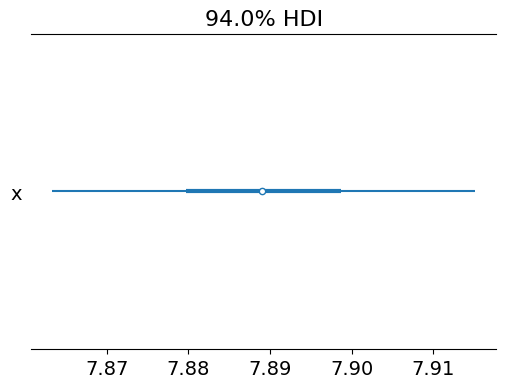
2.3.2. Cl titration analysis#
[27]:
cl_an = prtecan.TitrationAnalysis.fromlistfile("list.cl", is_ph=False)
cl_an.load_scheme("scheme.txt")
cl_an.scheme
[27]:
PlateScheme(file='scheme.txt', _buffer=['D01', 'E01', 'D12', 'E12'], _ctrl=['F12', 'B01', 'C01', 'A12', 'C12', 'F01', 'A01', 'G12', 'H12', 'H01', 'G01', 'B12'], _names={'G03': {'H12', 'B12', 'A01'}, 'NTT': {'F12', 'C12', 'F01'}, 'S202N': {'G12', 'H01', 'C01'}, 'V224Q': {'G01', 'B01', 'A12'}})
[28]:
cl_an.load_additions("additions.cl")
print(cl_an.conc)
cl_an.conc = prtecan.calculate_conc(cl_an.additions, 1000)
cl_an.conc
[0 0 0 0 0 0 0 0 0]
[28]:
array([ 0. , 17.54385965, 34.48275862, 50.84745763,
66.66666667, 81.96721311, 96.77419355, 138.46153846,
164.17910448])
[29]:
fres = cl_an.results[2][well]
print(fres.is_valid(), fres.result.bic, fres.result.redchi)
fres.figure
True 21.971302661955743 2.24215671140986
[29]:
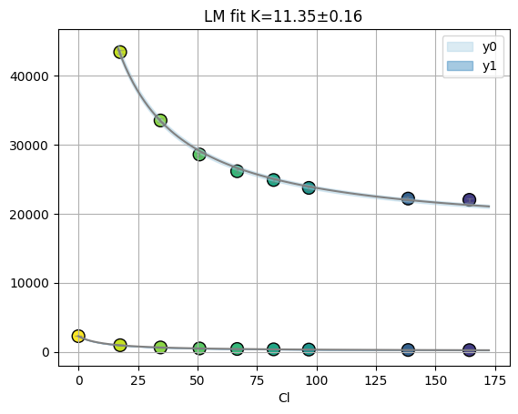
2.3.3. Plotting#
[30]:
f = titan.plot_k(1, title="2014-12-23", hue_column="S1_default")
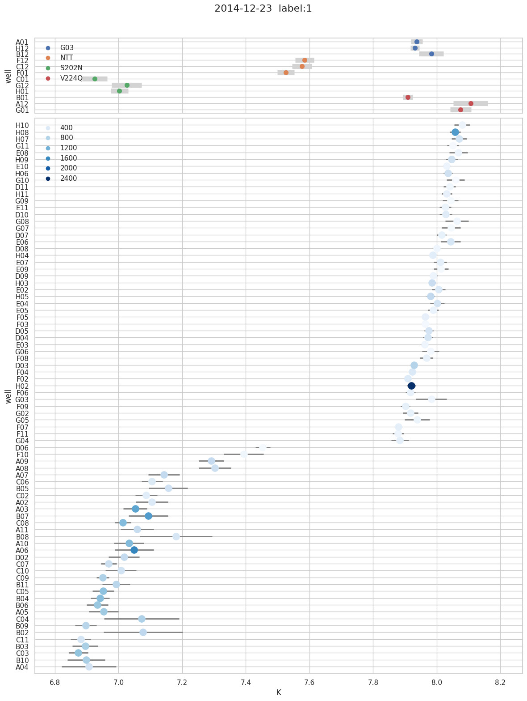
[31]:
titan.print_fitting(2)
K s K S0_y0 s S0_y0 S1_y0 s S1_y0 S0_y1 s S0_y1 S1_y1 s S1_y1
G03
A01 7.94 0.019 1.47e+04 4.2e+02 2.25e+04 2.5e+02 5.06e+03 51 302 24
H12 7.93 0.013 1.43e+04 5.1e+02 2.26e+04 3.1e+02 5.72e+03 39 377 19
B12 7.99 0.036 1.43e+04 2.1e+02 1.88e+04 1.2e+02 2.83e+03 55 215 25
NTT
F12 7.59 0.031 1.6e+04 4.9e+02 2.32e+04 3.6e+02 2.8e+03 35 404 23
C12 7.58 0.034 1.54e+04 5.5e+02 2.17e+04 4.1e+02 2.53e+03 35 357 23
F01 7.53 0.027 2.52e+04 1.9e+03 4.62e+04 1.5e+03 7.93e+03 86 1.04e+03 59
S202N
C01 6.93 0.042 3.25e+04 1.8e+03 4.21e+04 1.9e+03 6.9e+03 92 916 1e+02
G12 7.03 0.049 1.74e+04 9.1e+02 2.17e+04 9.3e+02 2.34e+03 38 328 39
H01 7 0.027 2.6e+04 1.8e+03 3.4e+04 1.9e+03 5.13e+03 45 729 48
V224Q
B01 7.91 0.015 2.47e+04 1.6e+03 3.93e+04 9.7e+02 1.52e+04 1.2e+02 503 58
A12 8.12 0.057 1.89e+04 1.2e+03 2.85e+04 6.4e+02 1.11e+04 3.7e+02 379 1.4e+02
G01 8.08 0.027 2.74e+04 5.4e+03 4e+04 3e+03 1.81e+04 2.9e+02 373 1.2e+02
K s K S0_y0 s S0_y0 S1_y0 s S1_y0 S0_y1 s S0_y1 S1_y1 s S1_y1
UNK
H10 8.08 0.023 1.25e+04 6.1e+02 1.78e+04 3.4e+02 3.2e+03 41 201 16
H08 8.06 0.017 2.98e+04 5.1e+03 6.13e+04 2.9e+03 2.64e+04 2.4e+02 1.44e+03 1e+02
H07 8.07 0.023 1.76e+04 3.6e+03 2.92e+04 2e+03 1.02e+04 1.3e+02 487 54
G11 8.05 0.017 1.09e+04 3.3e+02 1.41e+04 1.9e+02 1.56e+03 14 115 6
E08 8.07 0.028 1.36e+04 1.1e+03 1.88e+04 6.3e+02 3.94e+03 61 209 25
H09 8.05 0.018 1.73e+04 1.7e+03 3.08e+04 9.7e+02 1.03e+04 1.1e+02 547 44
E10 8.03 0.01 1.38e+04 3.7e+02 1.77e+04 2.1e+02 2.2e+03 12 202 5.2
H06 8.04 0.014 1.74e+04 2.3e+03 3.01e+04 1.3e+03 9.79e+03 73 541 31
G10 8.06 0.026 1.13e+04 2.5e+02 1.32e+04 1.4e+02 903 13 82.3 5.3
D11 8.04 0.018 1.25e+04 2.4e+02 1.62e+04 1.3e+02 2.36e+03 23 175 9.8
H11 8.03 0.016 1.36e+04 1.2e+03 2.07e+04 6.7e+02 5.04e+03 43 279 18
G09 8.04 0.023 1.26e+04 2.9e+02 1.5e+04 1.6e+02 1.14e+03 14 108 6
G08 8.06 0.036 1.32e+04 1.3e+03 1.76e+04 7.3e+02 3.62e+03 73 166 30
E11 8.03 0.017 1.21e+04 9e+02 1.71e+04 5.1e+02 3.6e+03 34 222 14
D10 8.03 0.019 1.54e+04 9.4e+02 2.38e+04 5.4e+02 6.6e+03 69 356 30
G07 8.05 0.028 1.23e+04 4.4e+02 1.55e+04 2.4e+02 1.9e+03 29 127 12
D07 8.02 0.015 1.45e+04 6e+02 2.06e+04 3.4e+02 4.84e+03 40 271 17
E06 8.05 0.03 1.79e+04 2.4e+03 2.9e+04 1.3e+03 1.02e+04 1.7e+02 469 71
D08 8 0.011 1.27e+04 3.6e+02 1.68e+04 2.1e+02 2.94e+03 17 182 7.3
E07 8.01 0.019 1.45e+04 1e+03 2.18e+04 5.9e+02 5.41e+03 57 298 25
H04 7.99 0.0076 1.5e+04 6.6e+02 2.27e+04 3.9e+02 5.26e+03 21 339 9.5
E09 8.02 0.024 1.26e+04 5e+02 1.51e+04 2.9e+02 2.05e+03 27 122 11
E02 8.01 0.02 1.71e+04 1.9e+03 2.67e+04 1.1e+03 7.77e+03 86 405 38
D09 7.99 0.013 1.3e+04 2.7e+02 1.78e+04 1.6e+02 3.21e+03 22 204 9.8
H03 7.99 0.01 1.88e+04 2.1e+03 3.31e+04 1.2e+03 1.09e+04 59 606 27
E04 8 0.022 1.88e+04 2.5e+03 3.05e+04 1.4e+03 1.04e+04 1.3e+02 476 55
E05 7.99 0.016 1.42e+04 6.4e+02 1.96e+04 3.7e+02 3.97e+03 34 243 15
H05 7.98 0.012 1.94e+04 2.4e+03 3.45e+04 1.4e+03 1.24e+04 78 693 35
F05 7.96 0.0068 1.42e+04 4.2e+02 2.06e+04 2.5e+02 4.43e+03 16 279 7.3
F03 7.96 0.0074 1.21e+04 2.7e+02 1.51e+04 1.6e+02 1.52e+03 5.8 133 2.7
D05 7.98 0.015 1.85e+04 1.3e+03 2.93e+04 7.8e+02 9.45e+03 75 493 34
D04 7.97 0.016 1.74e+04 1.4e+03 2.84e+04 8.2e+02 9.07e+03 78 483 35
E03 7.96 0.011 1.34e+04 3.2e+02 1.8e+04 1.9e+02 2.74e+03 16 191 7.1
G06 7.98 0.025 1.27e+04 3.2e+02 1.59e+04 1.9e+02 2.03e+03 27 136 12
F08 7.97 0.019 1.44e+04 9.4e+02 1.9e+04 5.6e+02 3.54e+03 36 262 16
D03 7.93 0.0089 2.11e+04 1.6e+03 3.82e+04 9.9e+02 1.4e+04 65 781 31
F04 7.92 0.01 1.67e+04 1.1e+03 2.5e+04 7e+02 7e+03 36 411 17
F02 7.91 0.0074 1.7e+04 1.3e+03 2.5e+04 8.1e+02 7.61e+03 29 387 14
H02 7.92 0.014 nan nan nan nan 4.35e+04 3.1e+02 2.4e+03 1.5e+02
G03 7.98 0.047 1.77e+04 3.7e+03 2.14e+04 2.2e+03 7.18e+03 1.9e+02 194 83
F06 7.92 0.016 1.49e+04 3e+02 1.97e+04 1.8e+02 3.45e+03 29 253 14
F09 7.9 0.014 1.34e+04 4e+02 1.95e+04 2.4e+02 3.98e+03 28 287 14
G02 7.92 0.024 1.55e+04 1.4e+03 2.08e+04 8.8e+02 5.35e+03 66 268 32
G05 7.94 0.038 1.57e+04 2.1e+03 2.01e+04 1.3e+03 5.68e+03 1.2e+02 222 54
F07 7.88 0.0095 1.41e+04 2.1e+02 2.05e+04 1.3e+02 4.07e+03 19 296 9.7
F11 7.88 0.017 1.25e+04 3.6e+02 1.67e+04 2.2e+02 2.71e+03 23 195 12
G04 7.89 0.027 1.71e+04 2e+03 2.26e+04 1.2e+03 6.06e+03 84 307 42
D06 7.45 0.023 1.66e+04 1.7e+03 1.67e+04 1.4e+03 3.34e+03 34 123 25
F10 7.41 0.068 1.37e+04 4.1e+02 1.56e+04 3.4e+02 2.41e+03 67 180 51
A09 7.3 0.042 2.47e+04 9.5e+02 3.13e+04 8.4e+02 5.37e+03 84 672 70
A08 7.31 0.052 2.94e+04 2.5e+03 3.47e+04 2.2e+03 6.86e+03 1.4e+02 582 1.2e+02
A06 7.54 0.19 4.51e+04 1.8e+03 6.15e+04 1.9e+03 1.38e+04 1.2e+03 2.83e+03 8.5e+02
B08 7.25 0.099 1.6e+04 6.2e+02 2.51e+04 5.5e+02 2.36e+03 84 494 74
A07 7.16 0.057 2.75e+04 1.3e+03 3.59e+04 1.2e+03 6.23e+03 1.3e+02 691 1.2e+02
C06 7.11 0.035 2.05e+04 5.3e+02 2.45e+04 5.2e+02 3.46e+03 42 398 40
B05 7.17 0.065 2.45e+04 1.2e+03 3.03e+04 1.2e+03 5.02e+03 1.2e+02 565 1.1e+02
A02 7.13 0.059 2.28e+04 4.8e+02 2.93e+04 4.7e+02 3.9e+03 82 430 79
C02 7.09 0.039 1.75e+04 5.3e+02 2.07e+04 5.3e+02 2.5e+03 33 339 32
A03 7.06 0.042 3.81e+04 1.4e+03 5.39e+04 1.4e+03 1e+04 1.4e+02 1.36e+03 1.4e+02
B07 7.11 0.068 4.25e+04 2.1e+03 5.87e+04 2e+03 1.22e+04 2.9e+02 1.48e+03 2.8e+02
B02 7.16 0.096 1.96e+04 6.5e+02 3.15e+04 6.1e+02 3.37e+03 1.2e+02 760 1.1e+02
C08 7.02 0.033 3.43e+04 1e+03 4.7e+04 1e+03 8.71e+03 95 1.13e+03 98
A11 7.07 0.057 2.46e+04 1.2e+03 3.2e+04 1.2e+03 5.03e+03 97 655 97
C04 7.15 0.1 2.24e+04 1e+03 3.8e+04 1e+03 4.37e+03 1.6e+02 906 1.5e+02
A10 7.04 0.048 3.16e+04 1.3e+03 4.47e+04 1.3e+03 7.04e+03 1.1e+02 1.13e+03 1.1e+02
D02 7.02 0.046 2.45e+04 7.7e+02 3.07e+04 8e+02 4.6e+03 68 684 71
C10 7.02 0.048 2.04e+04 7.9e+02 2.73e+04 8.2e+02 3.43e+03 53 523 56
C07 6.97 0.027 2.47e+04 9.4e+02 3.19e+04 9.9e+02 4.55e+03 39 601 43
B11 7 0.044 2.45e+04 7.8e+02 3.22e+04 8.2e+02 4.62e+03 64 761 68
C09 6.95 0.027 3.6e+04 1.5e+03 4.31e+04 1.6e+03 7.98e+03 71 847 78
B04 6.95 0.033 3.29e+04 1.3e+03 4.4e+04 1.4e+03 8.22e+03 86 1.08e+03 95
C05 6.96 0.041 3.61e+04 1.4e+03 4.67e+04 1.5e+03 8.25e+03 1.1e+02 1.05e+03 1.2e+02
B06 6.94 0.038 3.17e+04 1.2e+03 4.31e+04 1.3e+03 7.06e+03 85 989 95
A05 6.96 0.05 3.31e+04 1.5e+03 4.42e+04 1.6e+03 7.14e+03 1.1e+02 940 1.3e+02
B09 6.9 0.034 2.48e+04 7.9e+02 3.34e+04 8.7e+02 4.61e+03 47 773 54
C11 6.89 0.034 1.85e+04 3.7e+02 2.4e+04 4.1e+02 2.64e+03 26 494 30
C03 6.88 0.033 2.95e+04 7.9e+02 3.97e+04 8.8e+02 6.15e+03 61 1.03e+03 71
B03 6.91 0.047 2.83e+04 9e+02 3.71e+04 9.9e+02 5.89e+03 86 874 98
B10 6.91 0.063 2.77e+04 1.3e+03 3.63e+04 1.4e+03 5.65e+03 1.1e+02 873 1.2e+02
A04 6.93 0.083 2.11e+04 7.7e+02 2.82e+04 8.4e+02 3.23e+03 83 529 93
2.3.4. selection#
[32]:
titan
[32]:
TitrationAnalysis('Titration(files=["pH9.1_200214.xls", "pH8.3_200214.xls", ...], conc=array([9.06, 8.35, 7.7 , 7.08, 6.44, 5.83, 4.99]), data_size=2)'
(kwargs) fitkws =TitrationAnalysis.FitKwargs(ini=0, fin=-1, weight=False)
(preprocess) fitdata_params={}
[33]:
titan.fitdata_params = {"dil": 1, "nrm": 1}
titan
[33]:
TitrationAnalysis('Titration(files=["pH9.1_200214.xls", "pH8.3_200214.xls", ...], conc=array([9.06, 8.35, 7.7 , 7.08, 6.44, 5.83, 4.99]), data_size=2)'
(kwargs) fitkws =TitrationAnalysis.FitKwargs(ini=0, fin=-1, weight=False)
(preprocess) fitdata_params={'dil': 1, 'nrm': 1}
[34]:
f = titan.plot_ebar(0, y="S1_default", yerr="sS1_default")
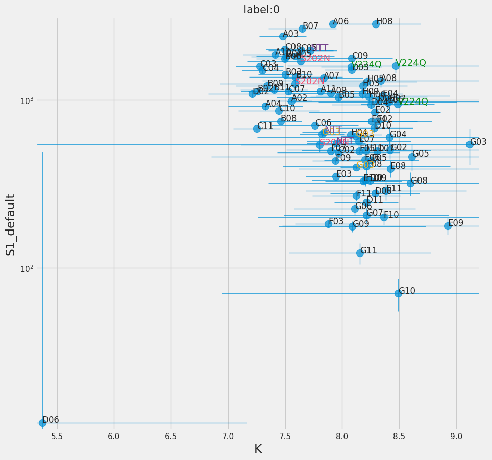
[35]:
f = titan.plot_ebar(2, y="S1_y1", yerr="sS1_y1", xmin=7.7, ymin=25)
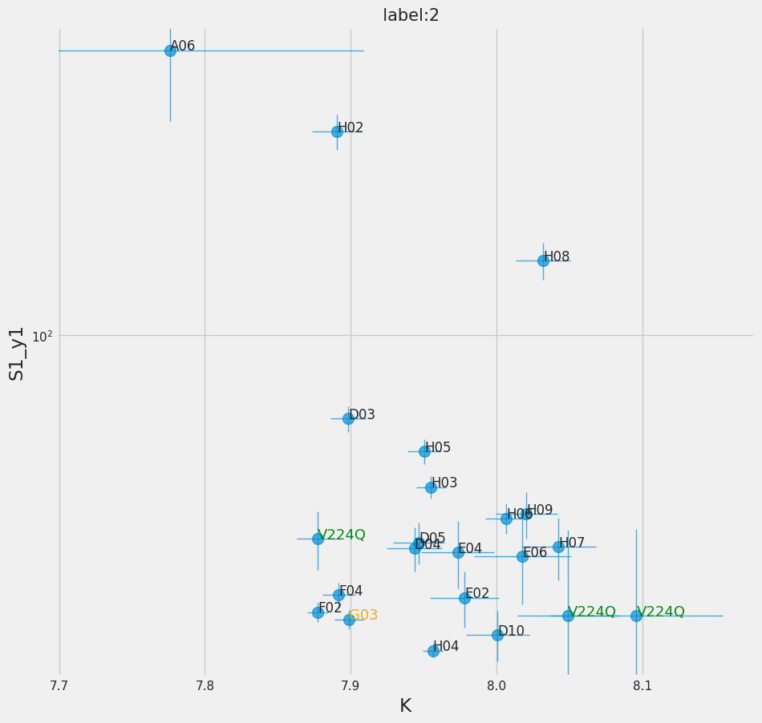
[36]:
titan.result_dfs[1].loc[titan.result_dfs[1]["ctrl"].isna(), "ctrl"] = "U"
sb.set_style("whitegrid")
g = sb.PairGrid(
titan.result_dfs[1],
x_vars=["K", "S1_default", "S0_default"],
y_vars=["K", "S1_default", "S0_default"],
hue="ctrl",
palette="Set1",
diag_sharey=False,
)
g.map_lower(plt.scatter)
g.map_upper(sb.kdeplot, fill=True)
g.map_diag(sb.kdeplot)
[36]:
<seaborn.axisgrid.PairGrid at 0x7f5289924290>
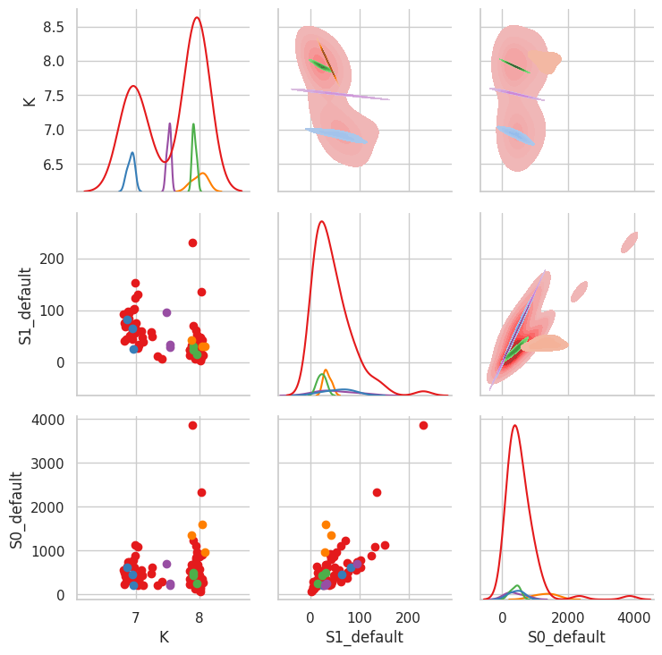
[37]:
with sb.axes_style("darkgrid"):
g = sb.pairplot(
titan.result_dfs[2][["S1_y0", "S0_y0", "K", "S1_y1", "S0_y1"]],
hue="S1_y0",
palette="Reds",
corner=True,
diag_kind="kde",
)
/home/dan/workspace/ClopHfit/.hatch/clophfit/lib/python3.11/site-packages/seaborn/axisgrid.py:118: UserWarning: The figure layout has changed to tight
self._figure.tight_layout(*args, **kwargs)
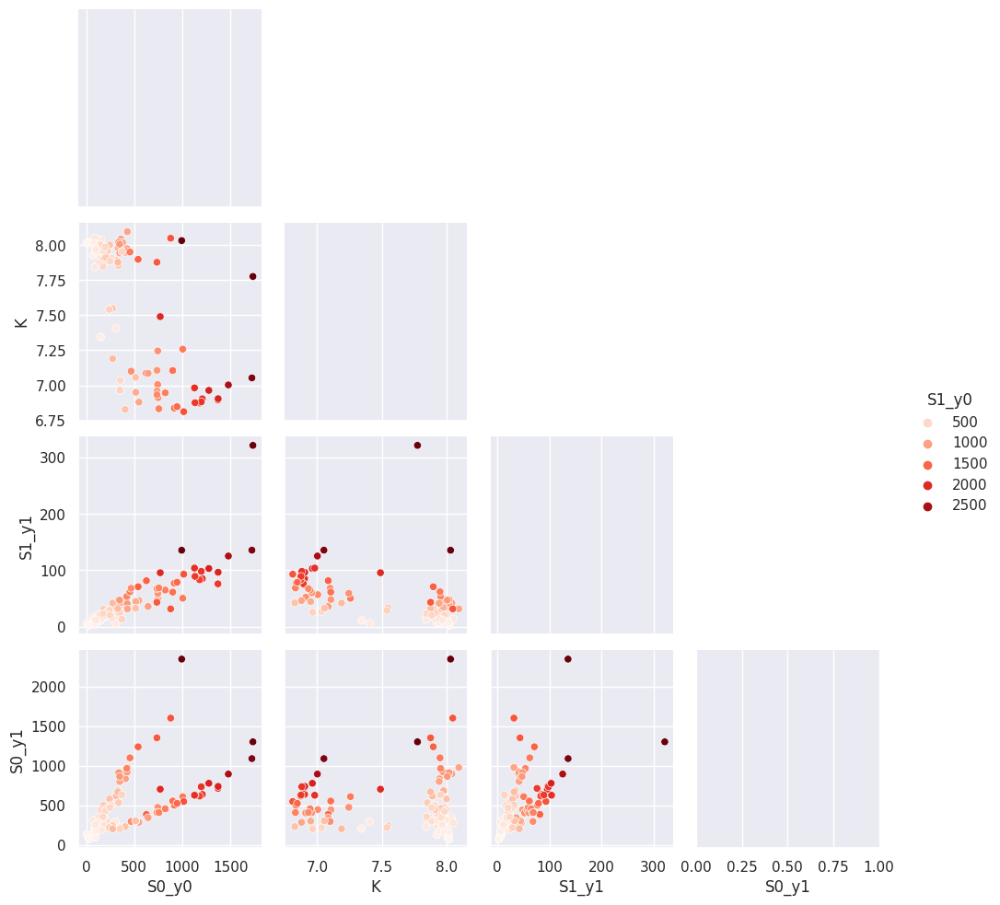
2.3.5. combining#
[38]:
res_unk = titan.result_dfs[1].loc[titan.keys_unk].sort_index()
res_unk["well"] = res_unk.index
[39]:
f = plt.figure(figsize=(24, 14))
# Make the PairGrid
g = sb.PairGrid(
res_unk,
x_vars=["K", "S1_default", "S0_default"],
y_vars="well",
height=12,
aspect=0.4,
)
# Draw a dot plot using the stripplot function
g.map(sb.stripplot, size=14, orient="h", palette="Set2", edgecolor="gray")
# Use the same x axis limits on all columns and add better labels
# g.set(xlim=(0, 25), xlabel="Crashes", ylabel="")
# Use semantically meaningful titles for the columns
titles = ["$pK_a$", "B$_{neutral}$", "B$_{anionic}$"]
for ax, title in zip(g.axes.flat, titles):
# Set a different title for each axes
ax.set(title=title)
# Make the grid horizontal instead of vertical
ax.xaxis.grid(False)
ax.yaxis.grid(True)
sb.despine(left=True, bottom=True)
<Figure size 2400x1400 with 0 Axes>
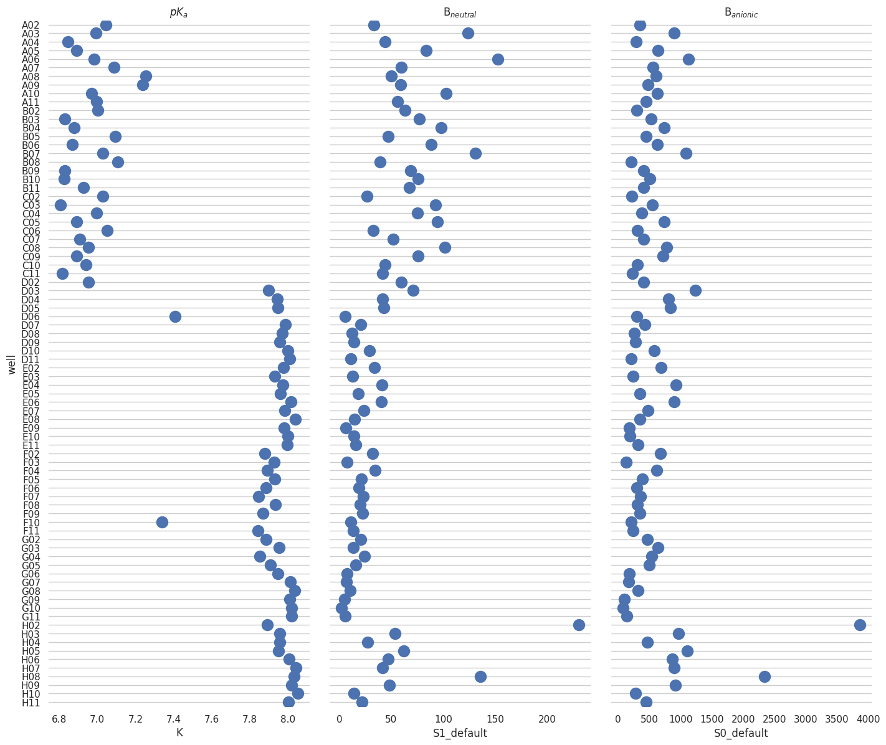